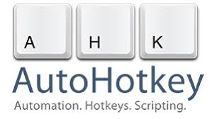

Programming on a computer is a fun way to exersize your brain and helps you control and understand depending on what software you are working, most of the times i ratherfool around with it or work on something that ive dreamed a long ago. for example, an game that you've wanted to make, and now with enough scripting knowledge you canFor myself, i am well experience in lua as i use it to fool around in roblox studio and Gmod and little in C# as i use to make small games in unity and cheat engine stuff. theres other languages i know but ive only use them in ways to solve a mathematic equation like python and TI84. one of the languages i am confident in learning is AHK(Auto Hot Key) as you can make custom macros in use of the language.overall, i would think that programming is fun and can cure boredom for the most part depending on how confident you are in learning it and knowing on how it works both client and the servers
Heres a bunch of documentations of the languages ive learned if you want to take a took of yourself
My contact information:
Ronald Ortiz
Bayonne, NJ 07002
Email me here
This page was last updated on April 28, 2026